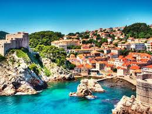
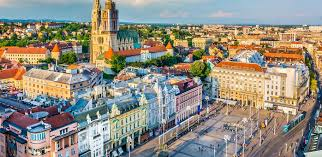
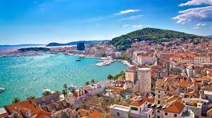
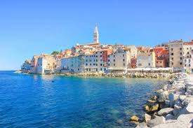

Dubrovnik
Dubrovnik, conocida como la "Perla del Adriático", es una de las ciudades más hermosas de Croacia. Con sus impresionantes murallas medievales, calles adoquinadas y vistas panorámicas al mar, Dubrovnik ofrece una experiencia inolvidable a sus visitantes. Entre sus principales atracciones se encuentran el casco antiguo amurallado, el Palacio del Rector, el Monasterio Franciscano y el teleférico que lleva a la montaña Srđ. Además, los turistas pueden disfrutar de actividades como el kayak en el mar Adriático, recorridos en barco por las islas cercanas y degustaciones de vino en las bodegas locales.
Zagreb
Zagreb, la capital de Croacia, es una ciudad vibrante llena de historia, cultura y encanto. Con sus hermosos parques, elegantes edificios históricos y bulliciosos mercados, Zagreb ofrece una amplia gama de experiencias a sus visitantes. Entre sus principales atracciones se encuentran la Catedral de Zagreb, la Plaza Ban Jelačić, el Museo Mimara y el barrio de Gradec. Además, los turistas pueden explorar los museos y galerías de la ciudad, disfrutar de la animada vida nocturna en los bares y clubes, y probar la deliciosa comida croata en los restaurantes locales.
Split
Split es una ciudad costera situada en la región de Dalmacia, conocida por su impresionante arquitectura romana y su encantador ambiente mediterráneo. Entre sus principales atracciones se encuentra el Palacio de Diocleciano, declarado Patrimonio de la Humanidad por la UNESCO, que alberga una ciudadela, una catedral y numerosos edificios históricos. Además, Split ofrece hermosas playas, islas cercanas para explorar y una animada escena cultural con festivales de música, teatro y arte durante todo el año. Los visitantes también pueden disfrutar de excursiones en barco por las islas, practicar deportes acuáticos como el buceo y el snorkel, y degustar la cocina dálmata en los restaurantes de la ciudad.
Rovinj
Rovinj es una encantadora ciudad costera situada en la península de Istria, conocida por su pintoresco casco antiguo, sus estrechas calles adoquinadas y sus impresionantes vistas al mar Adriático. Entre sus atracciones más destacadas se encuentran la Iglesia de Santa Eufemia, que ofrece vistas panorámicas desde su torre, el puerto pintoresco, el Parque Natural de Punta Corrente y las numerosas galerías de arte y estudios de artistas. Además, Rovinj es famosa por su deliciosa comida mediterránea, que se puede disfrutar en los restaurantes junto al mar, así como por sus playas tranquilas y sus oportunidades para practicar actividades al aire libre como el senderismo y el ciclismo.